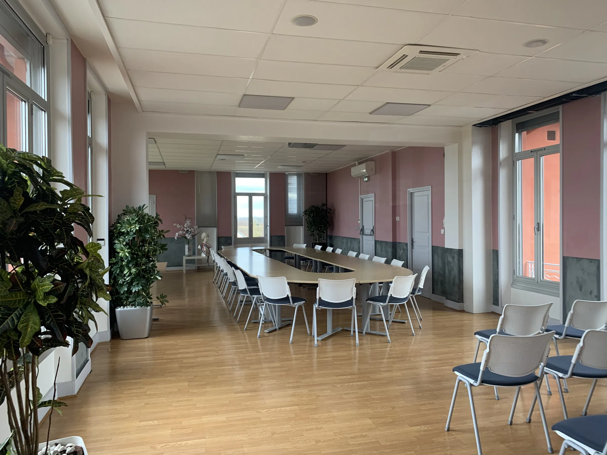

Dématérialisez le cycle de vie des délibérations
Un bouquet de services pour simplifier la prise de décision dans les collectivités territoriales, du rapport au procès-verbal.

Près de 200 collectivités déjà connectées
Communes, départements et services d’incendie utilisent déjà les services Qualigraf.

« Nous avons réduit de 40 % le temps de préparation des séances grâce à Qualigraf. L’interface est claire et les envois électroniques sont instantanés. »
DGS d’une communauté d’agglomération du Sud-Ouest
« Les élus apprécient la simplicité d’accès sur tablette et la traçabilité des documents. La mise en place s’est faite en moins de deux semaines. »
Secrétaire de mairie, commune de 5 000 habitants
Témoignages publiés par Qualigraf sur qualigraf.com.
Suivez votre conseil municipal du rapport à la publication
Chaque étape de la délibération dans un seul outil, et la date limite de convocation calculée pour votre séance.


Écrans d’exemple, données fictives
Jours francs. Le jour de l’envoi et le jour de la séance ne comptent pas, et un week-end ou un jour férié ne prolonge pas le délai (réponse ministérielle à la question écrite n° 29767). En cas d’urgence, le maire peut abréger le délai, sans descendre sous un jour franc. En Alsace-Moselle, le droit local peut s’appliquer. Posez-nous la question pour votre collectivité.
Jours francs. Le jour de l’envoi et le jour de la séance ne comptent pas, et un week-end ou un jour férié ne prolonge pas le délai (réponse ministérielle à la question écrite n° 29767). En cas d’urgence, le maire peut abréger le délai, sans descendre sous un jour franc. En Alsace-Moselle, le droit local peut s’appliquer. Posez-nous la question pour votre collectivité.

Une délibération vit bien après la séance. Qualigraf garde chaque rapport, chaque vote et chaque acte dans un seul dossier.
Un bouquet de services, un seul dossier
Délibération, KBox, Vote, PV et Publicité travaillent sur le même dossier, de la préparation à la publication.

Hébergé en France, dans un cloud souverain
Depuis le 1er janvier 2026, vos données sont protégées par Outscale dans un cloud qualifié SecNumCloud 3.2, la qualification la plus exigeante de l’ANSSI.
- SecNumCloud 3.2La qualification de l’ANSSI exigée pour les données sensibles de l’État et des collectivités
- Hébergé en FranceProtégé contre les lois extraterritoriales
- Conforme aux recommandations de la CNILPour la souveraineté et la pérennité de vos usages numériques
- TraçabilitéChaque action et chaque vote restent tracés
Une information ou une démonstration ?
Une démonstration autour de votre propre conseil municipal du , avec vos rapports, votre circuit des visas et vos élus.
Ou appelez l’équipe à Paris au 01 55 76 38 38